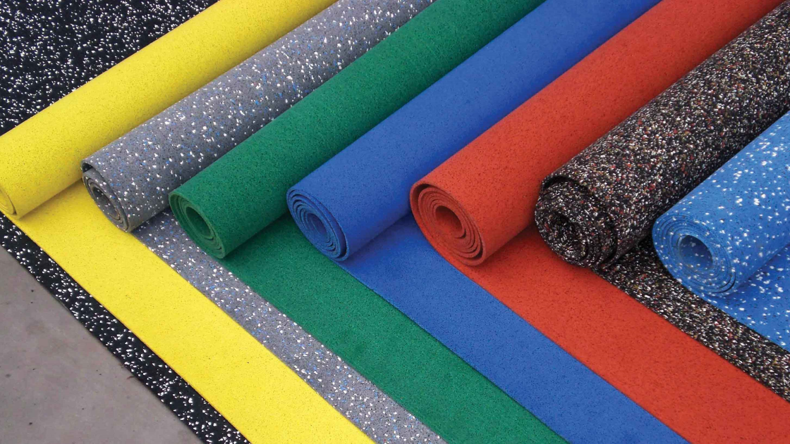
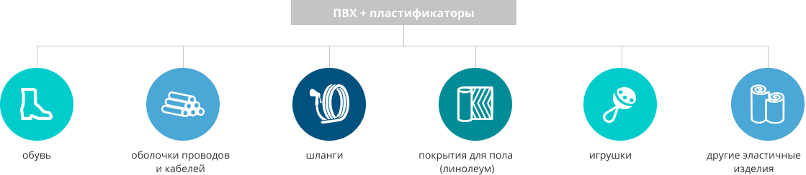

Пластификаторы

Чтобы жёсткие пластики стали мягкими и эластичными, в процессе производства в них добавляют прозрачную маслянистую жидкость — ПЛАСТИФИКАТОРЫ.
Изделиям из поливинилхлорида (ПВХ) пластификаторы придают:

гибкость
устойчивость к водной среде
устойчивость к сильному
нагреванию/охлаждению
нагреванию/охлаждению
устойчивость к действию
ультрафиолета
ультрафиолета

Специалисты СИБУРа изучили потребности рынка в различных пластификаторах. В том числе потребности таких компаний, как Tarkett (Германия, один из крупнейших производителей напольных покрытий) и Kuraray (Япония, медицинские изделия, искусственная кожа и другие современные материалы).
В научном центре учёные разработали несколько видов специальных пластификаторов, которые прошли тестирование у 18 российских и иностранных компаний.
Пластификаторы, разработанные в научном центре СИБУРа, применяются:
в производстве полимерной плёнки — внутреннего слоя многослойных стёкол (автомобилестроение и архитектурное остекление);
в производстве кабельной продукции, плёнок;
в производстве герметиков для стеклопакетов и клеев;
для изготовления напольных покрытий и других отделочных материалов.